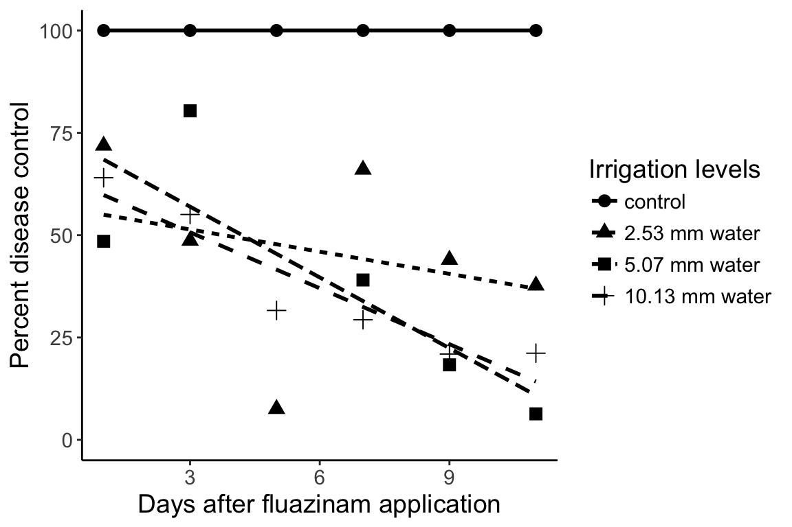
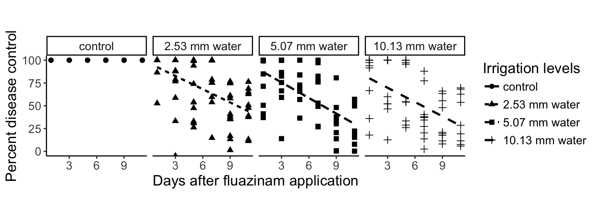

Figure 2
Reading in Data and Example Analysis
In this exercise, we will learn how to read in data as an object in R, find and load packages into our library, and then re-create Figure 2 from the 2017 paper by Morini et al. paper “Control of white mold of dry bean and residual activity of fungicides applied by chemigation.”
We can use the read.table() function to read these data in to R. It’s important to remember that while in R, these data are simply a copy kept in memory, not on the disk, so we don’t have to worry too much about accidentally deleting the data :).
So, how do we actually USE the read.table() function? A good first step to figuring out how you can use a function is to look at it’s help page. The way you can do that is by typing either help(“function_name”) or ?function_name.
> # Type ?read.table and answer these three questions:
> #
> # 1. What does it do? (Description)
> # 2. What are the first three arguments and their defaults? (Usage/Arguments)
> # 3. What does it return? (Value)In order to read our data into R, we will need to provide three things:
- The path to the data set : Results2017_combined-class.csv
- If the first row are column names : yes
- The separator for each cell in the data : comma
Now that we have these elements, we can read our data into a variable, which we can call “res” because it is short for “results”. Once we do this, we should check the dimensions to make sure that we have all of the data.
Now we can read in the data and inspect to make sure it is what we expect.
> res <- read.csv("Results2017_combined-class.csv", head = TRUE, stringsAsFactors = FALSE)
> head(res) DAI Number Your.name Area Treatment Block
1 1 1 Noel 19.808 control 1
2 1 2 Noel 9.371 2.53 mm water 1
3 1 3 Noel 0.000 5.07 mm water 1
4 1 4 Noel 0.531 10.13 mm water 1
5 1 5 Lee 0.000 10.13 mm water 2
6 1 6 Lee 20.914 control 2> dim(res)[1] 288 6This shows the data in columns named DAI, Number, Your.name, Area, and Treatment.
Thinking before doing: Your data and the analysis
The example data presented here were collected by students in the 2017 PLPT802 class and should represent the same data that this year’s class collected. This data consists of six columns of data: DAI, Number, Your.name, Area, Treatment, and Block. With these data, we want to answer the following questions:
- Can we convert lesion areas to a measurement that is relative to the control?
- What do we want to plot in order to demonstrate the residual disease control over time by treatment?
To answer these questions, we will need to manipulate the layout of the data and will also need to write a function to perform a calculation and then plot the results of the calculations over time. Not all data manipulations will be described in detail here and are shown so that you can re-run this analysis using data collected in class. We will do this using the following four steps:
> #- Create a function
- Spread the data in different columns by treatment
- Calculate percent disease control
- Summarize the average lesion area in a plot
> #
> #Preparing Data and Packages
We will re-create the figure using three packages dplyr, tidyr, and ggplot2. These packages add flexibility to data and figure manipulations. We will not go into these in detail. Refer to the tab in this website called “Other Exercises” to get started learning more.
> library("dplyr")
> library("tidyr")
> library("ggplot2")Reordering factors
The factors in the treatments will be out of order when plotting because it’s always alphabetical by default (and 1 comes before 2). Here we are reordering the factors:
> unique(res$Treatment) # The correct order[1] "control" "2.53 mm water" "5.07 mm water" "10.13 mm water"> res <- mutate(res, Treatment = factor(Treatment, levels = unique(Treatment)))
> levels(res$Treatment)[1] "control" "2.53 mm water" "5.07 mm water" "10.13 mm water"Calculating Percent Disease Control
Percent disease control is “estimated as the difference in lesion area of the control and treatment, divided by lesion area of the control and expressed as percent.” Because we will have to make this calculation many times, it’s best to write a function for it.
Step 1: Create a function
Our function will take in two numbers, the lesion area of the control and the lesion area of the treatment.
> percent_control <- function(control, treatment){
+ res <- (control - treatment)/control # estimate the disease control
+ return(res*100) # express as percent
+ }We can show that this works:
> percent_control(control = 10, treatment = 5)[1] 50Step 2: Spread the data in different columns by treatment
Our data were recorded in a “tidy” fashion in which we had one observation per row. In order to calculate the percent control, we’ll need to rehshape our data so that we have one column per treatment such that each row will represent a single block per day after application. We’ll use the tidyr function spread() to do this.
> blocks <- res %>%
+ select(DAI, Block, Treatment, Area) %>% # We don't need name or number here
+ spread(Treatment, Area) # make new columns from treatment, and fill with Area
> blocks DAI Block control 2.53 mm water 5.07 mm water 10.13 mm water
1 1 1 19.808 9.371 0.000 0.531
2 1 2 20.914 0.000 0.173 0.000
3 1 3 15.206 21.173 0.000 18.270
4 1 4 11.598 0.000 5.736 9.524
5 1 5 3.034 0.000 0.458 1.943
6 1 6 8.770 12.053 13.148 0.000
7 1 7 12.951 0.000 15.283 14.839
8 1 8 20.537 0.000 12.080 1.737
9 1 9 25.941 0.000 7.428 1.592
10 1 10 22.998 3.106 0.000 7.679
11 1 11 15.302 0.000 20.567 0.000
12 1 12 23.496 0.000 14.778 0.000
13 3 1 4.853 18.860 1.632 10.572
14 3 2 20.540 0.000 5.032 0.000
15 3 3 20.577 13.730 0.000 10.990
16 3 4 20.374 8.404 0.000 0.000
17 3 5 18.757 2.168 0.000 8.969
18 3 6 0.000 9.768 0.000 0.000
19 3 7 21.004 0.000 18.070 18.346
20 3 8 27.562 3.396 3.715 0.000
21 3 9 4.378 0.922 0.000 0.000
22 3 10 5.200 1.206 0.000 0.000
23 3 11 3.249 0.000 0.565 1.558
24 3 12 4.874 0.000 1.989 1.954
25 5 1 4.883 0.043 0.790 0.000
26 5 2 3.056 1.605 3.636 5.114
27 5 3 5.618 3.883 5.844 0.156
28 5 4 6.982 3.231 1.904 3.178
29 5 5 5.009 1.302 1.713 3.706
30 5 6 7.928 0.000 1.283 3.645
31 5 7 3.008 2.018 0.000 2.141
32 5 8 6.897 0.409 2.970 0.308
33 5 9 7.436 3.427 2.257 4.952
34 5 10 3.220 2.375 6.440 5.177
35 5 11 0.216 1.559 3.864 0.000
36 5 12 4.263 0.000 2.708 7.763
37 7 1 9.142 7.791 6.630 5.999
38 7 2 5.434 1.156 10.471 8.931
39 7 3 8.585 0.000 6.271 5.393
40 7 4 10.235 4.716 5.185 6.353
41 7 5 55.971 13.891 1.525 12.636
42 7 6 31.311 12.637 14.733 24.960
43 7 7 21.758 0.000 23.765 12.978
44 7 8 37.599 0.131 6.613 4.550
45 7 9 7.359 1.795 1.759 6.350
46 7 10 5.552 0.000 1.268 5.412
47 7 11 5.069 8.384 6.041 3.176
48 7 12 7.591 0.000 0.000 5.515
49 9 1 8.919 8.796 7.081 4.643
50 9 2 10.657 8.862 6.634 4.739
51 9 3 9.730 2.427 1.883 7.845
52 9 4 10.671 6.912 7.440 8.794
53 9 5 10.393 2.631 5.389 3.524
54 9 6 8.071 6.992 8.032 2.958
55 9 7 6.356 4.054 6.538 5.624
56 9 8 8.292 3.227 8.240 8.555
57 9 9 6.113 3.772 7.535 6.817
58 9 10 8.865 5.242 5.905 8.144
59 9 11 5.845 2.444 7.000 8.436
60 9 12 7.474 1.745 6.439 5.909
61 11 1 7.050 7.796 6.499 3.263
62 11 2 11.174 6.813 4.792 4.166
63 11 3 5.434 2.679 2.493 7.671
64 11 4 9.026 9.877 7.636 8.345
65 11 5 9.134 2.167 4.587 2.911
66 11 6 8.089 7.029 9.049 2.460
67 11 7 5.497 3.430 7.416 4.440
68 11 8 7.777 2.426 6.300 6.878
69 11 9 8.235 7.302 8.213 9.184
70 11 10 8.933 4.668 6.943 10.742
71 11 11 21.237 7.896 42.692 20.002
72 11 12 25.596 8.952 26.063 18.278Step 3: Calculate percent disease control
Now that we have reshaped our data, we can manipulate each treatment column to give us the percent control. Note: the backtics “`” allow R to recognize a variable with spaces.
> percents <- blocks %>%
+ mutate(`2.53 mm water` = percent_control(control, `2.53 mm water`)) %>%
+ mutate(`5.07 mm water` = percent_control(control, `5.07 mm water`)) %>%
+ mutate(`10.13 mm water` = percent_control(control, `10.13 mm water`)) %>%
+ mutate(control = percent_control(control, 0))
> percents DAI Block control 2.53 mm water 5.07 mm water 10.13 mm water
1 1 1 100 52.690832 100.0000000 97.319265
2 1 2 100 100.000000 99.1728029 100.000000
3 1 3 100 -39.241089 100.0000000 -20.149941
4 1 4 100 100.000000 50.5431971 17.882394
5 1 5 100 100.000000 84.9044166 35.959130
6 1 6 100 -37.434436 -49.9201824 100.000000
7 1 7 100 100.000000 -18.0063316 -14.578025
8 1 8 100 100.000000 41.1793349 91.542095
9 1 9 100 100.000000 71.3657916 93.862997
10 1 10 100 86.494478 100.0000000 66.610140
11 1 11 100 100.000000 -34.4072670 100.000000
12 1 12 100 100.000000 37.1041879 100.000000
13 3 1 100 -288.625592 66.3713167 -117.844632
14 3 2 100 100.000000 75.5014606 100.000000
15 3 3 100 33.275016 100.0000000 46.590854
16 3 4 100 58.751350 100.0000000 100.000000
17 3 5 100 88.441648 100.0000000 52.183185
18 3 6 NaN -Inf NaN NaN
19 3 7 100 100.000000 13.9687679 12.654732
20 3 8 100 87.678688 86.5212974 100.000000
21 3 9 100 78.940155 100.0000000 100.000000
22 3 10 100 76.807692 100.0000000 100.000000
23 3 11 100 100.000000 82.6100339 52.046784
24 3 12 100 100.000000 59.1916291 59.909725
25 5 1 100 99.119394 83.8214213 100.000000
26 5 2 100 47.480366 -18.9790576 -67.342932
27 5 3 100 30.882876 -4.0227839 97.223211
28 5 4 100 53.723861 72.7298768 54.482956
29 5 5 100 74.006788 65.8015572 26.013176
30 5 6 100 100.000000 83.8168517 54.023713
31 5 7 100 32.912234 100.0000000 28.823138
32 5 8 100 94.069885 56.9377990 95.534290
33 5 9 100 53.913394 69.6476600 33.405056
34 5 10 100 26.242236 -100.0000000 -60.776398
35 5 11 100 -621.759259 -1688.8888889 100.000000
36 5 12 100 100.000000 36.4766596 -82.101806
37 7 1 100 14.777948 27.4775760 34.379786
38 7 2 100 78.726537 -92.6941480 -64.354067
39 7 3 100 100.000000 26.9539895 37.181130
40 7 4 100 53.922814 49.3404983 37.928676
41 7 5 100 75.181791 97.2753747 77.424023
42 7 6 100 59.640382 52.9462489 20.283606
43 7 7 100 100.000000 -9.2241934 40.352974
44 7 8 100 99.651586 82.4117663 87.898614
45 7 9 100 75.608099 76.0972958 13.711102
46 7 10 100 100.000000 77.1613833 2.521614
47 7 11 100 -65.397514 -19.1753798 37.344644
48 7 12 100 100.000000 100.0000000 27.348175
49 9 1 100 1.379078 20.6076914 47.942594
50 9 2 100 16.843389 37.7498358 55.531575
51 9 3 100 75.056526 80.6474820 19.373073
52 9 4 100 35.226314 30.2783244 17.589729
53 9 5 100 74.684884 48.1477918 66.092562
54 9 6 100 13.368851 0.4832115 63.350266
55 9 7 100 36.217747 -2.8634361 11.516677
56 9 8 100 61.082972 0.6271105 -3.171732
57 9 9 100 38.295436 -23.2619009 -11.516440
58 9 10 100 40.868584 33.3897349 8.133108
59 9 11 100 58.186484 -19.7604790 -44.328486
60 9 12 100 76.652395 13.8480064 20.939256
61 11 1 100 -10.581560 7.8156028 53.716312
62 11 2 100 39.028101 57.1147306 62.717022
63 11 3 100 50.699301 54.1221936 -41.166728
64 11 4 100 -9.428318 15.3999557 7.544870
65 11 5 100 76.275454 49.7810379 68.130063
66 11 6 100 13.104216 -11.8679688 69.588330
67 11 7 100 37.602329 -34.9099509 19.228670
68 11 8 100 68.805452 18.9918992 11.559727
69 11 9 100 11.329690 0.2671524 -11.523983
70 11 10 100 47.744319 22.2769506 -20.250756
71 11 11 100 62.819607 -101.0265103 5.815322
72 11 12 100 65.025785 -1.8245038 28.590405Because figure 2 plotted the average value, we want to summarize our data in averages. To do this, we need to convert our data back to tidy format by using the tidyr function gather().
Additionally, because we observed some values that were missing or divided by zero, we need to add a filter that removes these points. For that, we will use the function is.finite().
> percents <- percents %>%
+ gather(key = Treatment, value = Area, -DAI, -Block) %>%
+ filter(is.finite(Area)) %>% # selecting all the finite values of Area
+ mutate(Treatment = factor(Treatment, levels = unique(Treatment))) # reset factor
> percents DAI Block Treatment Area
1 1 1 control 100.0000000
2 1 2 control 100.0000000
3 1 3 control 100.0000000
4 1 4 control 100.0000000
5 1 5 control 100.0000000
6 1 6 control 100.0000000
7 1 7 control 100.0000000
8 1 8 control 100.0000000
9 1 9 control 100.0000000
10 1 10 control 100.0000000
11 1 11 control 100.0000000
12 1 12 control 100.0000000
13 3 1 control 100.0000000
14 3 2 control 100.0000000
15 3 3 control 100.0000000
16 3 4 control 100.0000000
17 3 5 control 100.0000000
18 3 7 control 100.0000000
19 3 8 control 100.0000000
20 3 9 control 100.0000000
21 3 10 control 100.0000000
22 3 11 control 100.0000000
23 3 12 control 100.0000000
24 5 1 control 100.0000000
25 5 2 control 100.0000000
26 5 3 control 100.0000000
27 5 4 control 100.0000000
28 5 5 control 100.0000000
29 5 6 control 100.0000000
30 5 7 control 100.0000000
31 5 8 control 100.0000000
32 5 9 control 100.0000000
33 5 10 control 100.0000000
34 5 11 control 100.0000000
35 5 12 control 100.0000000
36 7 1 control 100.0000000
37 7 2 control 100.0000000
38 7 3 control 100.0000000
39 7 4 control 100.0000000
40 7 5 control 100.0000000
41 7 6 control 100.0000000
42 7 7 control 100.0000000
43 7 8 control 100.0000000
44 7 9 control 100.0000000
45 7 10 control 100.0000000
46 7 11 control 100.0000000
47 7 12 control 100.0000000
48 9 1 control 100.0000000
49 9 2 control 100.0000000
50 9 3 control 100.0000000
51 9 4 control 100.0000000
52 9 5 control 100.0000000
53 9 6 control 100.0000000
54 9 7 control 100.0000000
55 9 8 control 100.0000000
56 9 9 control 100.0000000
57 9 10 control 100.0000000
58 9 11 control 100.0000000
59 9 12 control 100.0000000
60 11 1 control 100.0000000
61 11 2 control 100.0000000
62 11 3 control 100.0000000
63 11 4 control 100.0000000
64 11 5 control 100.0000000
65 11 6 control 100.0000000
66 11 7 control 100.0000000
67 11 8 control 100.0000000
68 11 9 control 100.0000000
69 11 10 control 100.0000000
70 11 11 control 100.0000000
71 11 12 control 100.0000000
72 1 1 2.53 mm water 52.6908320
73 1 2 2.53 mm water 100.0000000
74 1 3 2.53 mm water -39.2410890
75 1 4 2.53 mm water 100.0000000
76 1 5 2.53 mm water 100.0000000
77 1 6 2.53 mm water -37.4344356
78 1 7 2.53 mm water 100.0000000
79 1 8 2.53 mm water 100.0000000
80 1 9 2.53 mm water 100.0000000
81 1 10 2.53 mm water 86.4944778
82 1 11 2.53 mm water 100.0000000
83 1 12 2.53 mm water 100.0000000
84 3 1 2.53 mm water -288.6255924
85 3 2 2.53 mm water 100.0000000
86 3 3 2.53 mm water 33.2750158
87 3 4 2.53 mm water 58.7513498
88 3 5 2.53 mm water 88.4416485
89 3 7 2.53 mm water 100.0000000
90 3 8 2.53 mm water 87.6786880
91 3 9 2.53 mm water 78.9401553
92 3 10 2.53 mm water 76.8076923
93 3 11 2.53 mm water 100.0000000
94 3 12 2.53 mm water 100.0000000
95 5 1 2.53 mm water 99.1193938
96 5 2 2.53 mm water 47.4803665
97 5 3 2.53 mm water 30.8828765
98 5 4 2.53 mm water 53.7238614
99 5 5 2.53 mm water 74.0067878
100 5 6 2.53 mm water 100.0000000
101 5 7 2.53 mm water 32.9122340
102 5 8 2.53 mm water 94.0698855
103 5 9 2.53 mm water 53.9133943
104 5 10 2.53 mm water 26.2422360
105 5 11 2.53 mm water -621.7592593
106 5 12 2.53 mm water 100.0000000
107 7 1 2.53 mm water 14.7779479
108 7 2 2.53 mm water 78.7265366
109 7 3 2.53 mm water 100.0000000
110 7 4 2.53 mm water 53.9228139
111 7 5 2.53 mm water 75.1817906
112 7 6 2.53 mm water 59.6403820
113 7 7 2.53 mm water 100.0000000
114 7 8 2.53 mm water 99.6515865
115 7 9 2.53 mm water 75.6080989
116 7 10 2.53 mm water 100.0000000
117 7 11 2.53 mm water -65.3975143
118 7 12 2.53 mm water 100.0000000
119 9 1 2.53 mm water 1.3790784
120 9 2 2.53 mm water 16.8433893
121 9 3 2.53 mm water 75.0565262
122 9 4 2.53 mm water 35.2263143
123 9 5 2.53 mm water 74.6848841
124 9 6 2.53 mm water 13.3688514
125 9 7 2.53 mm water 36.2177470
126 9 8 2.53 mm water 61.0829715
127 9 9 2.53 mm water 38.2954360
128 9 10 2.53 mm water 40.8685843
129 9 11 2.53 mm water 58.1864842
130 9 12 2.53 mm water 76.6523950
131 11 1 2.53 mm water -10.5815603
132 11 2 2.53 mm water 39.0281009
133 11 3 2.53 mm water 50.6993007
134 11 4 2.53 mm water -9.4283182
135 11 5 2.53 mm water 76.2754543
136 11 6 2.53 mm water 13.1042156
137 11 7 2.53 mm water 37.6023285
138 11 8 2.53 mm water 68.8054520
139 11 9 2.53 mm water 11.3296903
140 11 10 2.53 mm water 47.7443188
141 11 11 2.53 mm water 62.8196073
142 11 12 2.53 mm water 65.0257853
143 1 1 5.07 mm water 100.0000000
144 1 2 5.07 mm water 99.1728029
145 1 3 5.07 mm water 100.0000000
146 1 4 5.07 mm water 50.5431971
147 1 5 5.07 mm water 84.9044166
148 1 6 5.07 mm water -49.9201824
149 1 7 5.07 mm water -18.0063316
150 1 8 5.07 mm water 41.1793349
151 1 9 5.07 mm water 71.3657916
152 1 10 5.07 mm water 100.0000000
153 1 11 5.07 mm water -34.4072670
154 1 12 5.07 mm water 37.1041879
155 3 1 5.07 mm water 66.3713167
156 3 2 5.07 mm water 75.5014606
157 3 3 5.07 mm water 100.0000000
158 3 4 5.07 mm water 100.0000000
159 3 5 5.07 mm water 100.0000000
160 3 7 5.07 mm water 13.9687679
161 3 8 5.07 mm water 86.5212974
162 3 9 5.07 mm water 100.0000000
163 3 10 5.07 mm water 100.0000000
164 3 11 5.07 mm water 82.6100339
165 3 12 5.07 mm water 59.1916291
166 5 1 5.07 mm water 83.8214213
167 5 2 5.07 mm water -18.9790576
168 5 3 5.07 mm water -4.0227839
169 5 4 5.07 mm water 72.7298768
170 5 5 5.07 mm water 65.8015572
171 5 6 5.07 mm water 83.8168517
172 5 7 5.07 mm water 100.0000000
173 5 8 5.07 mm water 56.9377990
174 5 9 5.07 mm water 69.6476600
175 5 10 5.07 mm water -100.0000000
176 5 11 5.07 mm water -1688.8888889
177 5 12 5.07 mm water 36.4766596
178 7 1 5.07 mm water 27.4775760
179 7 2 5.07 mm water -92.6941480
180 7 3 5.07 mm water 26.9539895
181 7 4 5.07 mm water 49.3404983
182 7 5 5.07 mm water 97.2753747
183 7 6 5.07 mm water 52.9462489
184 7 7 5.07 mm water -9.2241934
185 7 8 5.07 mm water 82.4117663
186 7 9 5.07 mm water 76.0972958
187 7 10 5.07 mm water 77.1613833
188 7 11 5.07 mm water -19.1753798
189 7 12 5.07 mm water 100.0000000
190 9 1 5.07 mm water 20.6076914
191 9 2 5.07 mm water 37.7498358
192 9 3 5.07 mm water 80.6474820
193 9 4 5.07 mm water 30.2783244
194 9 5 5.07 mm water 48.1477918
195 9 6 5.07 mm water 0.4832115
196 9 7 5.07 mm water -2.8634361
197 9 8 5.07 mm water 0.6271105
198 9 9 5.07 mm water -23.2619009
199 9 10 5.07 mm water 33.3897349
200 9 11 5.07 mm water -19.7604790
201 9 12 5.07 mm water 13.8480064
202 11 1 5.07 mm water 7.8156028
203 11 2 5.07 mm water 57.1147306
204 11 3 5.07 mm water 54.1221936
205 11 4 5.07 mm water 15.3999557
206 11 5 5.07 mm water 49.7810379
207 11 6 5.07 mm water -11.8679688
208 11 7 5.07 mm water -34.9099509
209 11 8 5.07 mm water 18.9918992
210 11 9 5.07 mm water 0.2671524
211 11 10 5.07 mm water 22.2769506
212 11 11 5.07 mm water -101.0265103
213 11 12 5.07 mm water -1.8245038
214 1 1 10.13 mm water 97.3192649
215 1 2 10.13 mm water 100.0000000
216 1 3 10.13 mm water -20.1499408
217 1 4 10.13 mm water 17.8823935
218 1 5 10.13 mm water 35.9591299
219 1 6 10.13 mm water 100.0000000
220 1 7 10.13 mm water -14.5780249
221 1 8 10.13 mm water 91.5420948
222 1 9 10.13 mm water 93.8629968
223 1 10 10.13 mm water 66.6101400
224 1 11 10.13 mm water 100.0000000
225 1 12 10.13 mm water 100.0000000
226 3 1 10.13 mm water -117.8446322
227 3 2 10.13 mm water 100.0000000
228 3 3 10.13 mm water 46.5908539
229 3 4 10.13 mm water 100.0000000
230 3 5 10.13 mm water 52.1831849
231 3 7 10.13 mm water 12.6547324
232 3 8 10.13 mm water 100.0000000
233 3 9 10.13 mm water 100.0000000
234 3 10 10.13 mm water 100.0000000
235 3 11 10.13 mm water 52.0467836
236 3 12 10.13 mm water 59.9097251
237 5 1 10.13 mm water 100.0000000
238 5 2 10.13 mm water -67.3429319
239 5 3 10.13 mm water 97.2232111
240 5 4 10.13 mm water 54.4829562
241 5 5 10.13 mm water 26.0131763
242 5 6 10.13 mm water 54.0237134
243 5 7 10.13 mm water 28.8231383
244 5 8 10.13 mm water 95.5342903
245 5 9 10.13 mm water 33.4050565
246 5 10 10.13 mm water -60.7763975
247 5 11 10.13 mm water 100.0000000
248 5 12 10.13 mm water -82.1018062
249 7 1 10.13 mm water 34.3797856
250 7 2 10.13 mm water -64.3540670
251 7 3 10.13 mm water 37.1811299
252 7 4 10.13 mm water 37.9286761
253 7 5 10.13 mm water 77.4240232
254 7 6 10.13 mm water 20.2836064
255 7 7 10.13 mm water 40.3529736
256 7 8 10.13 mm water 87.8986143
257 7 9 10.13 mm water 13.7111021
258 7 10 10.13 mm water 2.5216138
259 7 11 10.13 mm water 37.3446439
260 7 12 10.13 mm water 27.3481755
261 9 1 10.13 mm water 47.9425945
262 9 2 10.13 mm water 55.5315755
263 9 3 10.13 mm water 19.3730730
264 9 4 10.13 mm water 17.5897292
265 9 5 10.13 mm water 66.0925623
266 9 6 10.13 mm water 63.3502664
267 9 7 10.13 mm water 11.5166772
268 9 8 10.13 mm water -3.1717318
269 9 9 10.13 mm water -11.5164404
270 9 10 10.13 mm water 8.1331077
271 9 11 10.13 mm water -44.3284859
272 9 12 10.13 mm water 20.9392561
273 11 1 10.13 mm water 53.7163121
274 11 2 10.13 mm water 62.7170217
275 11 3 10.13 mm water -41.1667280
276 11 4 10.13 mm water 7.5448704
277 11 5 10.13 mm water 68.1300635
278 11 6 10.13 mm water 69.5883298
279 11 7 10.13 mm water 19.2286702
280 11 8 10.13 mm water 11.5597274
281 11 9 10.13 mm water -11.5239830
282 11 10 10.13 mm water -20.2507556
283 11 11 10.13 mm water 5.8153223
284 11 12 10.13 mm water 28.5904048Step 4: Summarize the average lesion area
We can summarize the average area per DAI and Treatment, which will allow us to plot the data in the manner of Morini et al. 2017.
> avgs <- percents %>%
+ group_by(DAI, Treatment) %>%
+ summarize(meanArea = mean(Area, na.rm = TRUE)) %>%
+ ungroup()
> avgs# A tibble: 24 x 3
DAI Treatment meanArea
<int> <fct> <dbl>
1 1 control 100.
2 1 2.53 mm water 71.9
3 1 5.07 mm water 48.5
4 1 10.13 mm water 64.0
5 3 control 100.
6 3 2.53 mm water 48.7
7 3 5.07 mm water 80.4
8 3 10.13 mm water 55.0
9 5 control 100.
10 5 2.53 mm water 7.55
# ... with 14 more rowsNow that we have our averages, we can plot it using ggplot2
> ggplot(avgs, aes(x = DAI, y = meanArea, group = Treatment)) +
+ geom_point(aes(pch = Treatment), size = 3) + # plot the points
+ stat_smooth(aes(lty = Treatment), method = "lm", se = FALSE, color = "black") + # plot the regression
+ theme_classic() + # change the appearance
+ ylim(0, 100) + # set the limits on the y axis
+ theme(text = element_text(size = 14)) + # increase the text size
+ labs(list( # Set the labels
+ x = "Days after fluazinam application",
+ y = "Percent disease control",
+ pch = "Irrigation levels",
+ lty = "Irrigation levels"))Warning: Removed 1 rows containing non-finite values (stat_smooth).Warning: Removed 1 rows containing missing values (geom_point).
Additional visualizations
When we plot the averages, we inadvertently hide the data. Of course, if we tried to plot all the data in one graph, it would look a bit messy:
> ggplot(percents, aes(x = DAI, y = Area, group = Treatment)) +
+ geom_point(aes(pch = Treatment), size = 3) + # plot the points
+ stat_smooth(aes(lty = Treatment), method = "lm", se = FALSE, color = "black") + # plot the regression
+ theme_classic() + # change the appearance
+ ylim(0, 100) + # set the limits on the y axis
+ theme(text = element_text(size = 14)) + # increase the text size
+ labs(list( # Set the labels
+ x = "Days after fluazinam application",
+ y = "Percent disease control",
+ pch = "Irrigation levels",
+ lty = "Irrigation levels"))Warning: Removed 37 rows containing non-finite values (stat_smooth).Warning: Removed 37 rows containing missing values (geom_point).Warning: Removed 80 rows containing missing values (geom_smooth).
With ggplot2, we can spread the data out into “facets”:
> ggplot(percents, aes(x = DAI, y = Area, group = Treatment)) +
+ geom_point(aes(pch = Treatment), size = 2) + # plot the points
+ stat_smooth(aes(lty = Treatment), method = "lm", se = FALSE, color = "black") + # plot the regression
+ theme_classic() + # change the appearance
+ ylim(0, 100) + # set the limits on the y axis
+ theme(text = element_text(size = 14)) + # increase the text size
+ facet_wrap(~Treatment, nrow = 1) +
+ theme(aspect.ratio = 1) +
+ labs(list( # Set the labels
+ x = "Days after fluazinam application",
+ y = "Percent disease control",
+ pch = "Irrigation levels",
+ lty = "Irrigation levels"))Warning: Removed 37 rows containing non-finite values (stat_smooth).Warning: Removed 37 rows containing missing values (geom_point).Warning: Removed 80 rows containing missing values (geom_smooth).

This work is licensed under a Creative Commons Attribution-ShareAlike 4.0 International License.